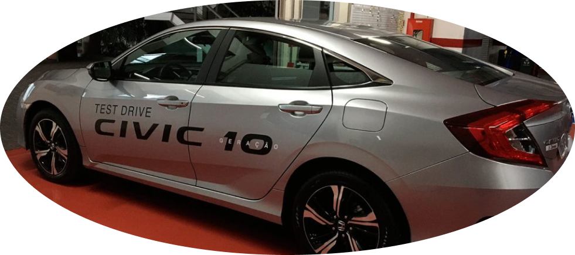
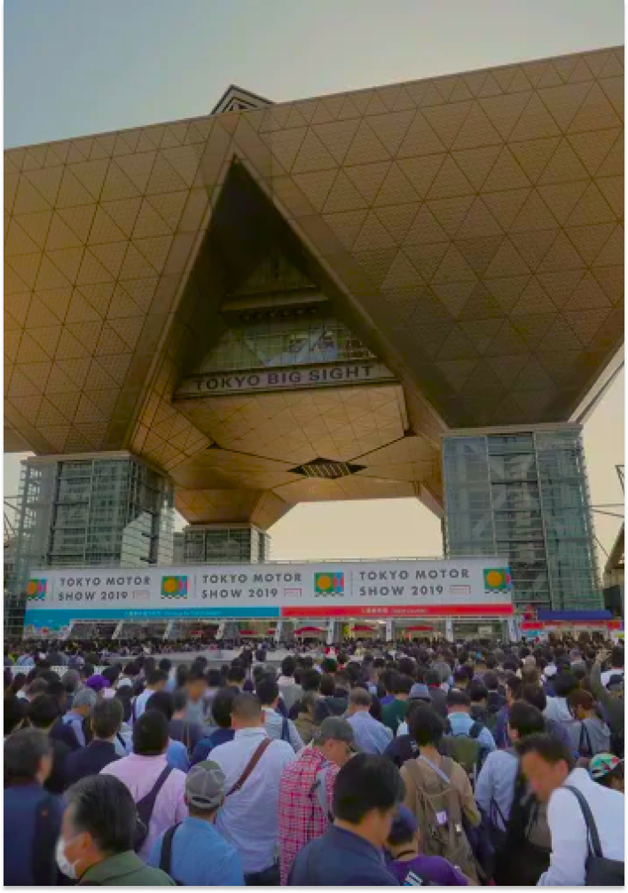

SOBRE
O paraíso dos apaixonados por carros, com eventos especiais de test-drive.
Esta feira de automóveis no outono é uma das maiores do mundo e exibe veículos comerciais, carros e motos. Os fabricantes de automóveis muitas vezes revelam seus lançamentos mundiais e do Japão aqui, então sempre há algo impressionante para ver.
Um evento internacional

Uma das feiras mais diversificadas de automóveis da indústria automobilística, o Salão do Automóvel de Tóquio ocorre a cada dois anos no final do outono. Organizado pela Associação dos Fabricantes de Automóveis do Japão, exibe os lançamentos da indústria.